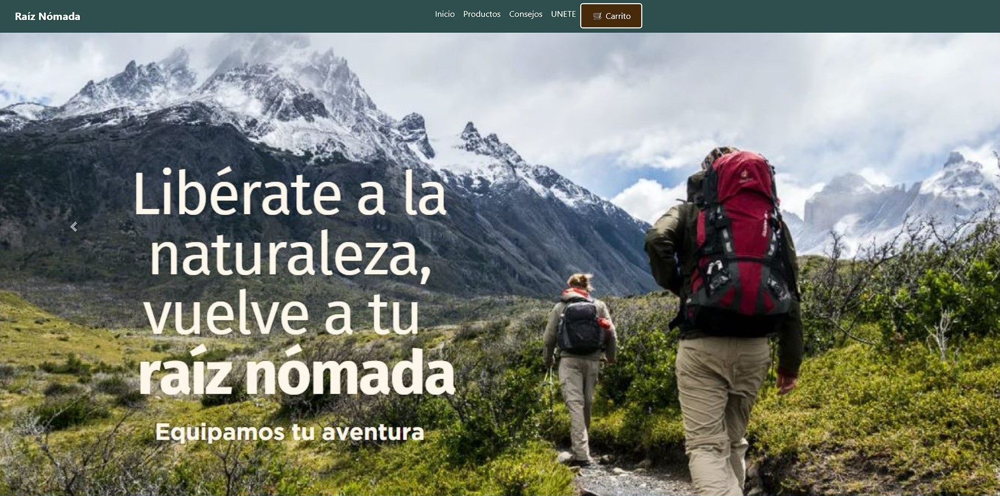

Proyectos
White LotusDesarrollé junto a un equipo colaborativo el e-commerce "White Lotus" como parte de mi formación en desarrollo fullstack. Implementé el frontend con JavaScript, Bootstrap y CSS, asegurando una interfaz intuitiva y responsiva. Utilicé Figma para el diseño UI/UX, Jira para la gestión de tareas y GitHub para el control de versiones. Actualmente, estoy desarrollando el backend en Java, explorando arquitecturas escalables y conexiones con bases de datos. Además, integré Formspree para la gestión de formularios. Este proyecto me ha permitido fortalecer mis habilidades en el desarrollo web, la gestión ágil y la colaboración en equipo.
Participé en un hackathon donde, en un tiempo límite de 6 horas, desarrollé principalmente el frontend de una aplicación web. Utilicé JavaScript, CSS y Bootstrap en Visual Studio Code, enfocándome en crear una interfaz responsiva y funcional. Este desafío me permitió mejorar mis habilidades en desarrollo web, trabajo bajo presión y colaboración en equipo.
